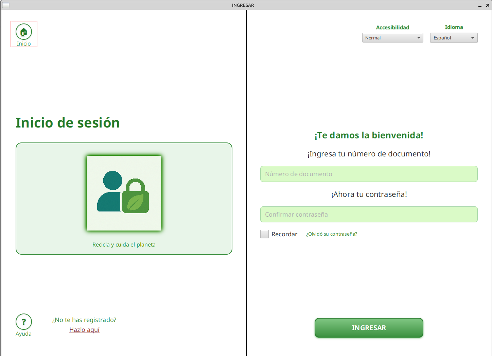
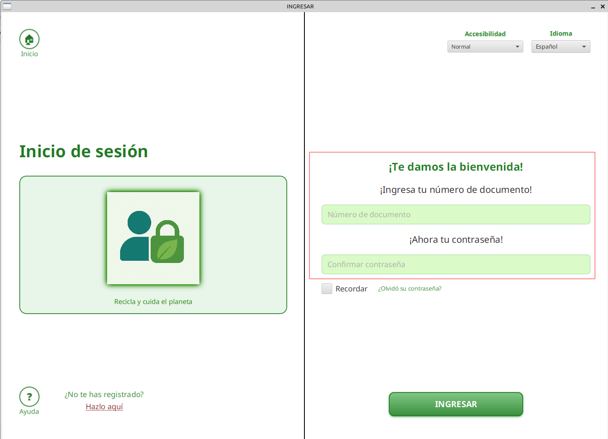
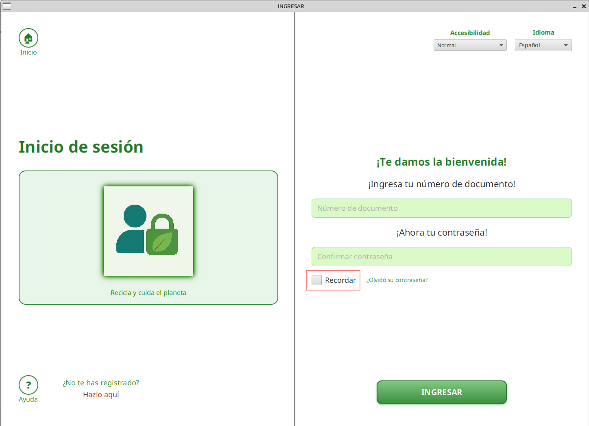
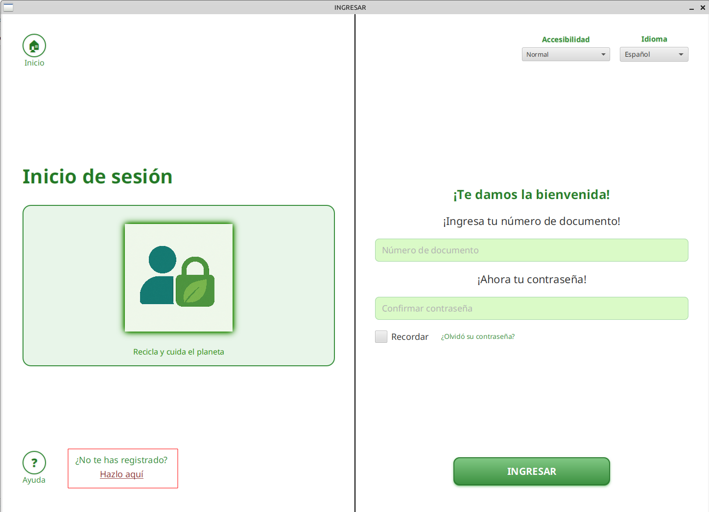
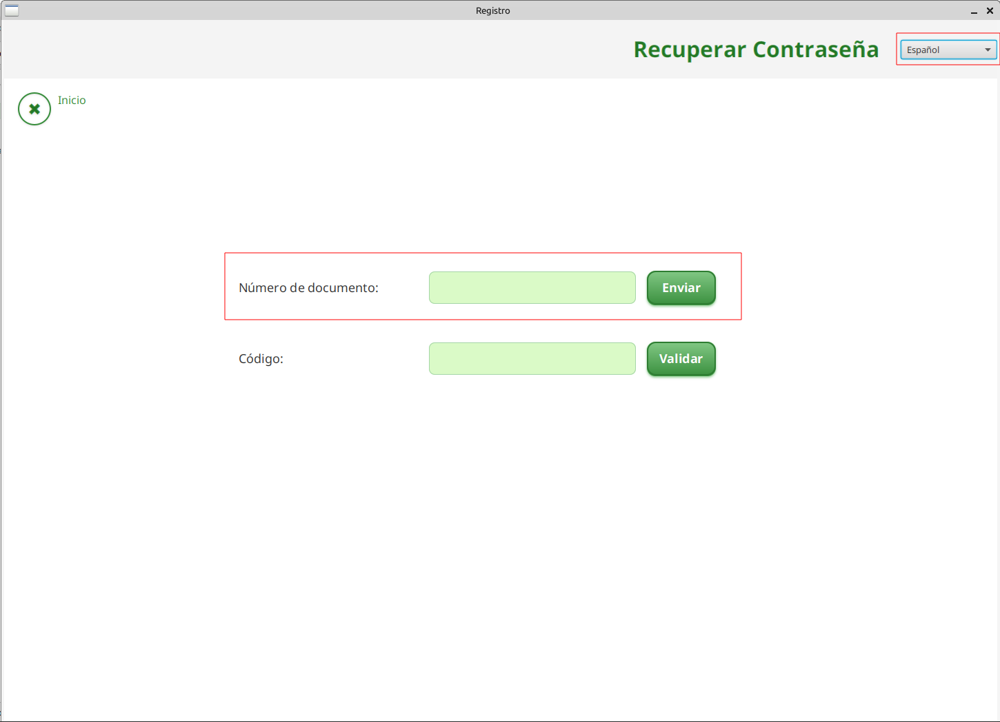

Tutorial: Ventana de Inicio de Sesión
Conoce cada elemento de la ventana para iniciar sesión en la aplicación.
Vista general
Esta es la pantalla principal para ingresar a la aplicación. A continuación, te explicamos cada parte resaltada.
Volver a la pantalla de inicio
Haz clic en este botón para regresar a la pantalla principal de la aplicación.
Accesibilidad e Idioma

Ajusta la accesibilidad visual o cambia el idioma de la aplicación desde estos menús desplegables.
Cerrar o Minimizar

Utiliza estos botones para cerrar completamente la aplicación o minimizar la ventana.
Ingresar tus credenciales
Introduce tu número de documento y contraseña en los campos correspondientes para acceder.
Botón Ingresar
Presiona el botón INGRESAR después de llenar tus datos para validar y entrar a la aplicación.
Recordar datos
Activa esta casilla si quieres que la aplicación recuerde tus credenciales para futuros ingresos.
¿Olvidaste tu contraseña?
Haz clic aquí si olvidaste tu contraseña para iniciar el proceso de recuperación.
¿No te has registrado?
Si aún no tienes una cuenta, haz clic en este enlace para acceder al formulario de registro.
Recuperar contraseña: Vista general
En esta pantalla puedes iniciar el proceso para recuperar tu contraseña si la has olvidado.
Seleccionar idioma
Puedes elegir el idioma en el que prefieres recibir las instrucciones del proceso de recuperación.
Ingresa tu número de documento
Introduce tu número de documento. Se enviará un código al correo electrónico que tienes registrado.
Ingresa el código recibido
Revisa tu correo electrónico y escribe aquí el código que has recibido para validar tu identidad.
Restablecer tu contraseña
Después de validar el código recibido, el sistema te pedirá que ingreses una nueva clave que cumpla con los requisitos de seguridad y que la repitas para confirmarla.
Finalmente, haz clic en Guardar y tu contraseña habrá sido restablecida exitosamente.